材料 2個分
※粉量を変えると自動計算されます
生地
塗り用
型
作り方
生地
STEP 1
ホームベーカリーに材料を入れ、「生地コース」で20分こねる
ホームベーカリーに材料を入れますが、ココアパウダーと板チョコは後の工程で使うため、ここでは加えません。20分ほどこねて、生地がひとまとまりになれば、ホームベーカリーを稼働させたまま次の工程へ進みます。
ホームベーカリーに材料を入れますが、ココアパウダーと板チョコは後の工程で使うため、ここでは加えません。20分ほどこねて、生地がひとまとまりになれば、ホームベーカリーを稼働させたまま次の工程へ進みます。
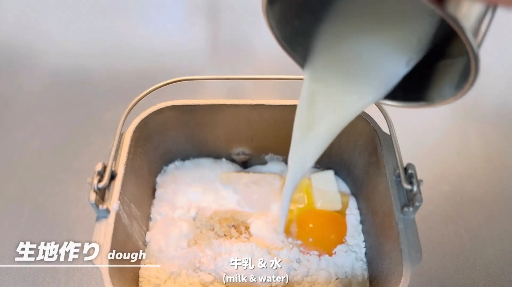
STEP 2
生地を取り出し、分割する（[動画 01:07]）
この後ホームベーカリーに生地を戻して発酵させるため、「生地コース」を稼働させたまま、生地を一度取り出します。3：2に分け、大きい方をプレーン生地、小さい方をココア生地にします。
この後ホームベーカリーに生地を戻して発酵させるため、「生地コース」を稼働させたまま、生地を一度取り出します。3：2に分け、大きい方をプレーン生地、小さい方をココア生地にします。
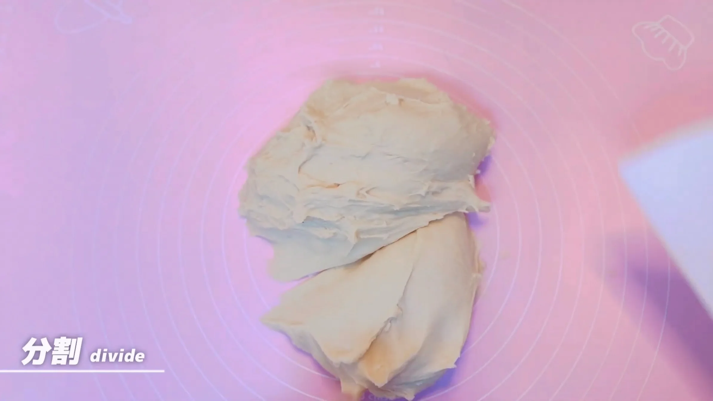
STEP 3
大きい方の生地をホームベーカリーに戻す
大きい方の生地はプレーン生地として、そのままホームベーカリーに戻して発酵を続けます。
大きい方の生地はプレーン生地として、そのままホームベーカリーに戻して発酵を続けます。
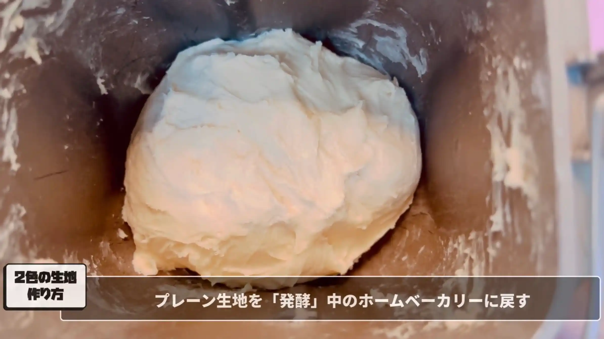
STEP 4
小さい方の生地をボウルに移し、ココアを混ぜる（[動画 01:50]）
小さい方の生地にココアを加え、粉気がなくなるまで混ぜます。
小さい方の生地にココアを加え、粉気がなくなるまで混ぜます。
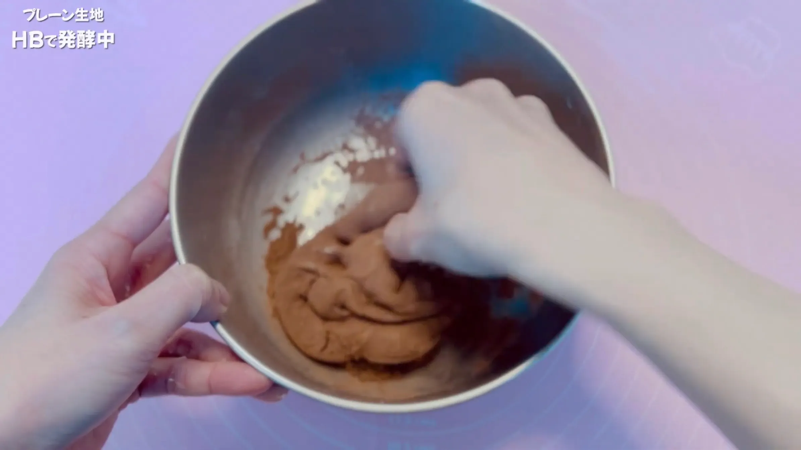
STEP 5
ココア生地を捏ねる
ボウルの中で混ぜた後、マットに出してさらに捏ねます。
ボウルの中で混ぜた後、マットに出してさらに捏ねます。
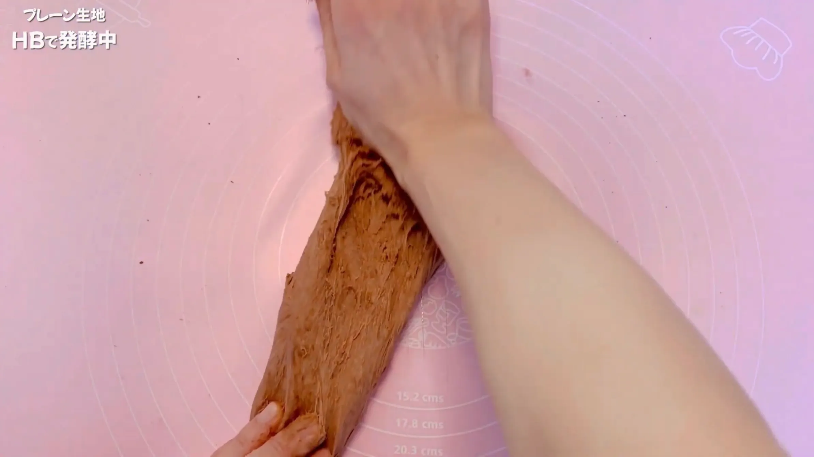
STEP 6
ココア生地を丸め、室温で40分おく
ココア生地を丸めて表面を整え、乾燥しないようにラップをして休ませます。こうしてココア生地とプレーン生地の発酵を同時に進めていきます。
ココア生地を丸めて表面を整え、乾燥しないようにラップをして休ませます。こうしてココア生地とプレーン生地の発酵を同時に進めていきます。
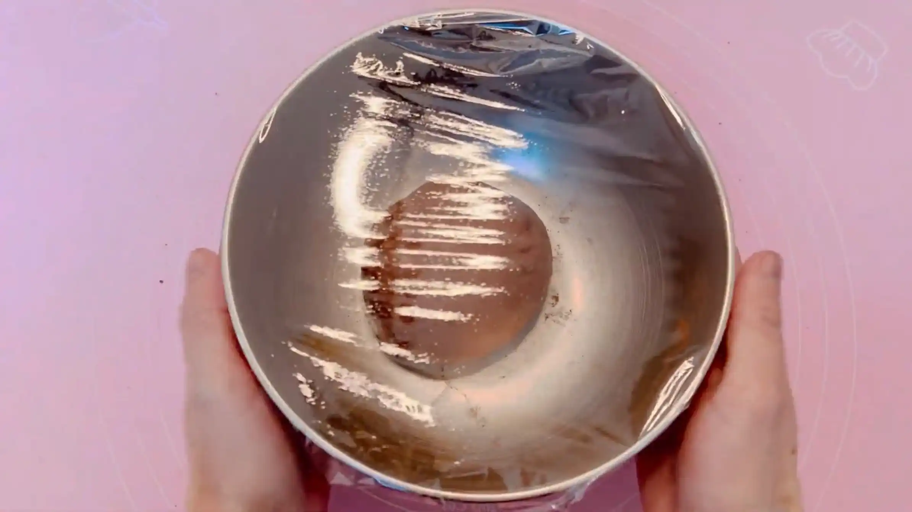
STEP 7
プレーン生地を取り出し、丸める
ホームベーカリーの「生地コース」が完了したら、生地を取り出し、軽く丸めて表面を整えます。乾燥しないようにラップをして、次の成形まで待機させます。
ホームベーカリーの「生地コース」が完了したら、生地を取り出し、軽く丸めて表面を整えます。乾燥しないようにラップをして、次の成形まで待機させます。
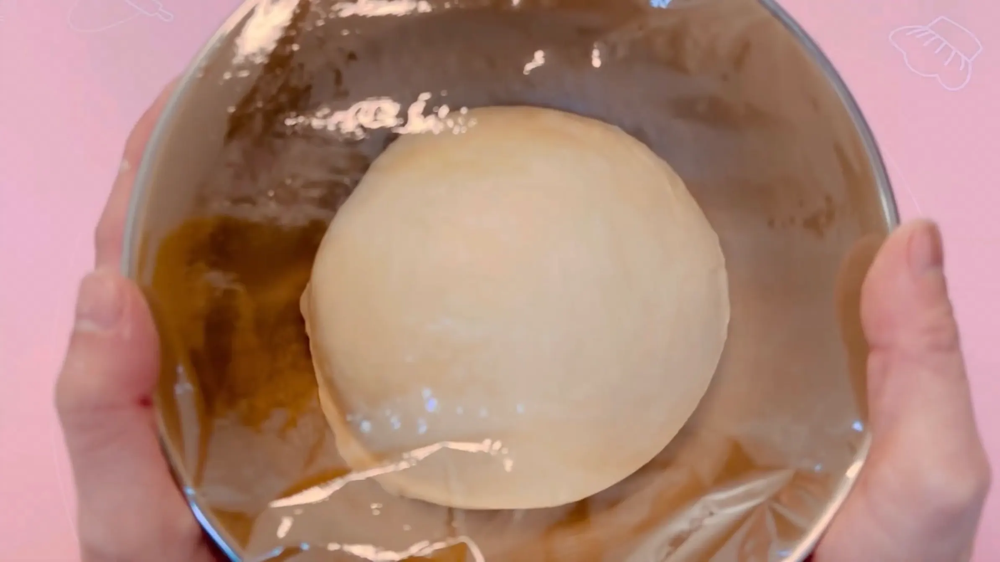
STEP 8
型に油を塗る
焼き上がったパンを型から取り出しやすくするため、型の内側に薄く塗っておきます。
焼き上がったパンを型から取り出しやすくするため、型の内側に薄く塗っておきます。
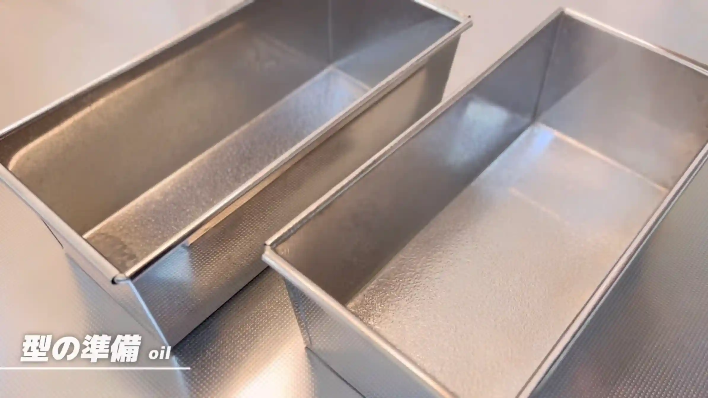
STEP 9
ココア生地を縦35×横30㎝に伸ばす（[動画 02:55]）
ココア生地を35×30㎝ほどの長方形に伸ばします。次の工程でプレーン生地を伸ばすため、伸ばしたココア生地は天板などを使いスライドさせて、別の場所に待機させます。
ココア生地を35×30㎝ほどの長方形に伸ばします。次の工程でプレーン生地を伸ばすため、伸ばしたココア生地は天板などを使いスライドさせて、別の場所に待機させます。
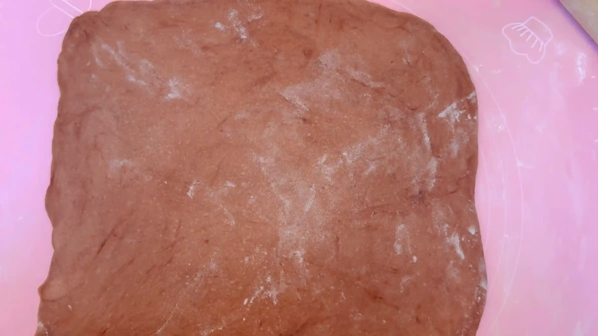
STEP 10
プレーン生地を縦35×横45㎝に伸ばす（[動画 03:45]）
プレーン生地を35×45㎝ほどの長方形に伸ばします。ココア生地より大きく伸ばしておくことで、この後に重ねて折り畳みやすくなります。
プレーン生地を35×45㎝ほどの長方形に伸ばします。ココア生地より大きく伸ばしておくことで、この後に重ねて折り畳みやすくなります。
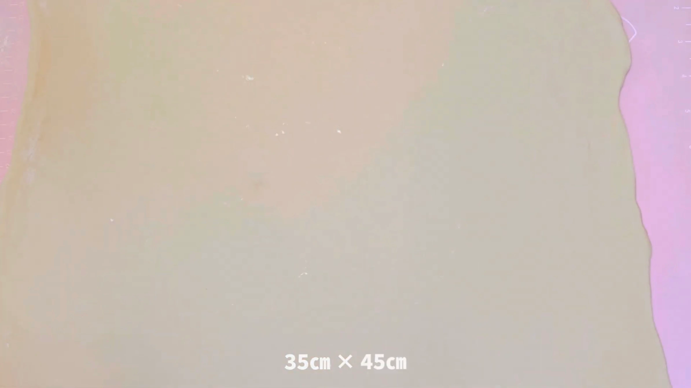
STEP 11
プレーンとココアの生地を重ねる（[動画 04:14]）
プレーン生地の上にココア生地を重ねます。画像のように、生地の上下と右端をそろえて重ねます。
プレーン生地の上にココア生地を重ねます。画像のように、生地の上下と右端をそろえて重ねます。
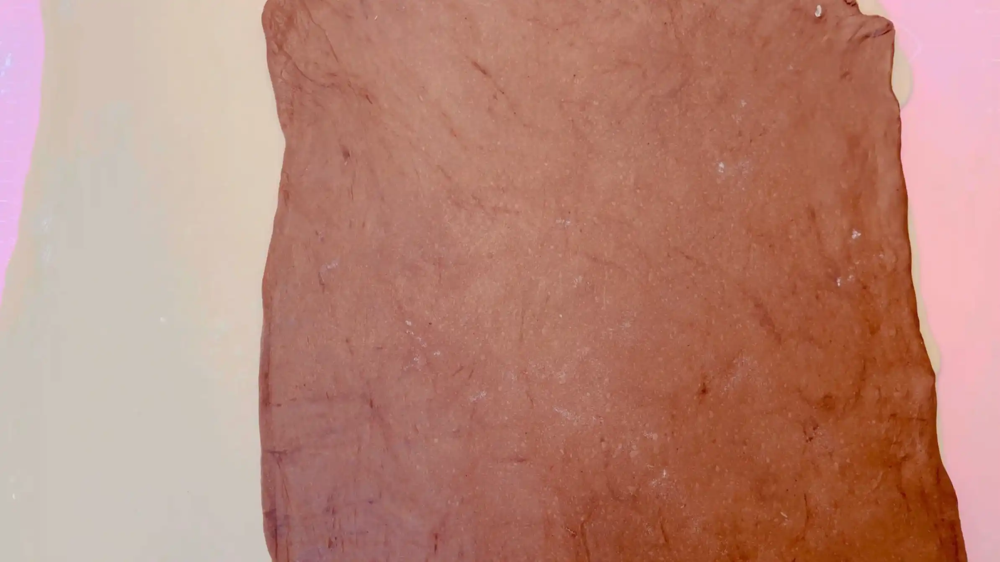
STEP 12
生地を三つ折りする（[動画 04:31]）
重ねた生地を三つ折りにします。生地を左側から畳み、プレーン生地とココア生地が交互に重なるようにします。
重ねた生地を三つ折りにします。生地を左側から畳み、プレーン生地とココア生地が交互に重なるようにします。
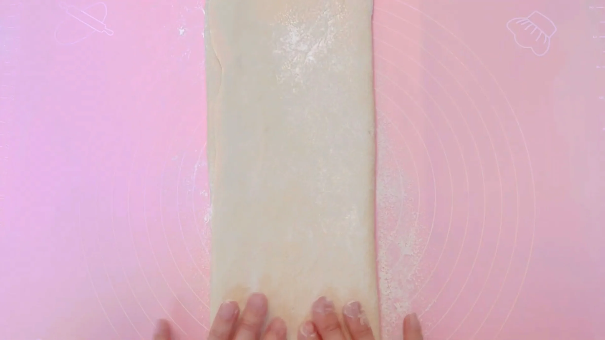
STEP 13
生地を半分にカットする
三つ折りした生地を画像のように半分にカットします。半分がパウンド型1台分になります。
三つ折りした生地を画像のように半分にカットします。半分がパウンド型1台分になります。
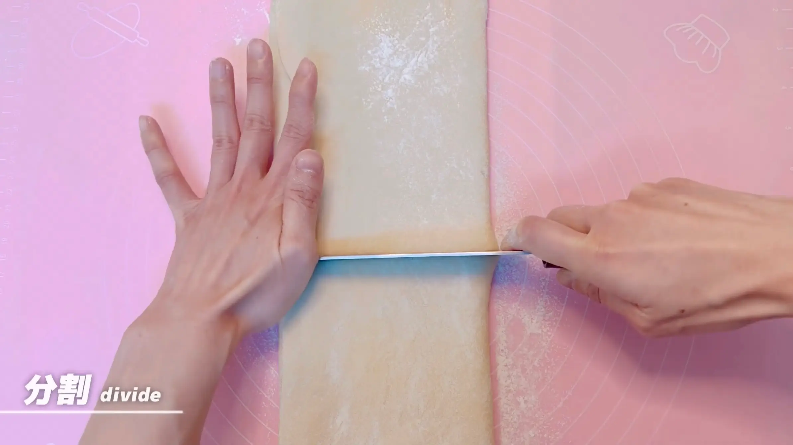
STEP 14
生地を17㎝×17㎝に伸ばす
半分にした生地を17㎝ほどの正方形に伸ばし、三つ折りの端が開いている方を上にしておきます。こうすることで、次の工程で切れ込みを入れた時に、生地がほどけにくくなります。
半分にした生地を17㎝ほどの正方形に伸ばし、三つ折りの端が開いている方を上にしておきます。こうすることで、次の工程で切れ込みを入れた時に、生地がほどけにくくなります。
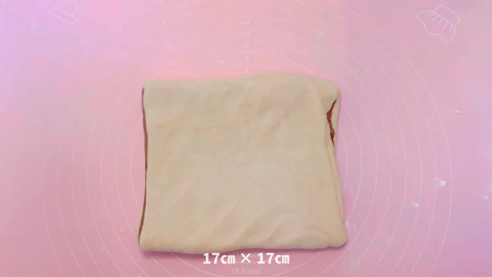
STEP 15
生地に切れ込みを入れる
生地の上部を4㎝残し、10本ほど切れ込みを入れます。切れ込みの間隔をできるだけそろえておくと、ねじったときの模様が整いやすくなります。
生地の上部を4㎝残し、10本ほど切れ込みを入れます。切れ込みの間隔をできるだけそろえておくと、ねじったときの模様が整いやすくなります。
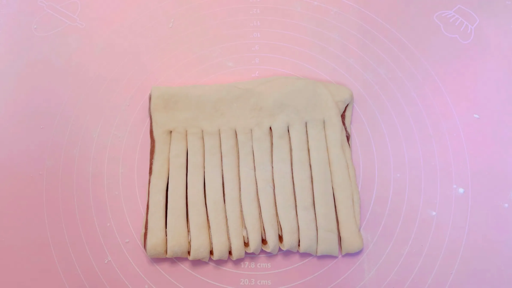
STEP 16
生地をねじる（[動画 05:29]）
切れ込みを入れた部分を1本ずつねじります。ねじり過ぎると生地が丸まってきてしまうため、引っ張らずに、自然な力でやさしくねじるのが美しく仕上げるポイントです。ねじった生地がほどけてこないよう、お箸などで押さえておくと作業しやすくなります。
切れ込みを入れた部分を1本ずつねじります。ねじり過ぎると生地が丸まってきてしまうため、引っ張らずに、自然な力でやさしくねじるのが美しく仕上げるポイントです。ねじった生地がほどけてこないよう、お箸などで押さえておくと作業しやすくなります。
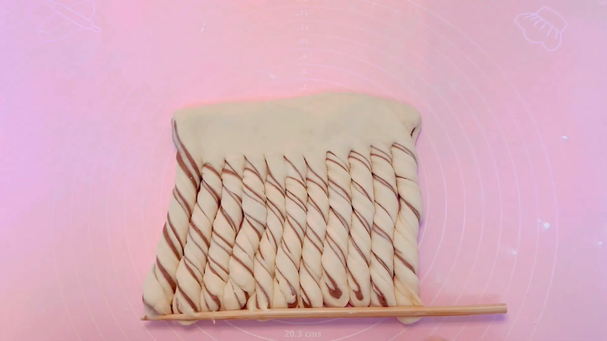
STEP 17
生地にチョコを入れる
生地の上部にチョコをのせます。
生地の上部にチョコをのせます。
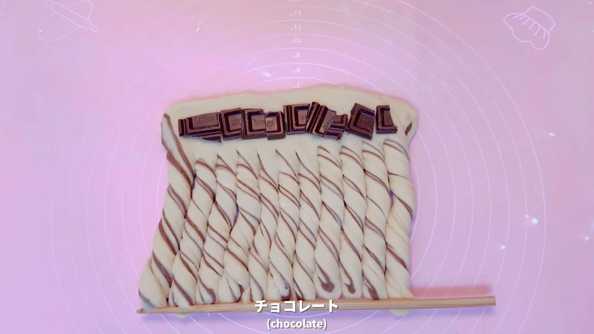
STEP 18
生地を巻く（[動画 07:44]）
上部の切れ込みを入れていない部分を起点に、生地を端から巻いていきます。ねじった部分を外側に巻き付けることで、焼き上がったときに、外側にも内側にもマーブル模様が現れます。
上部の切れ込みを入れていない部分を起点に、生地を端から巻いていきます。ねじった部分を外側に巻き付けることで、焼き上がったときに、外側にも内側にもマーブル模様が現れます。
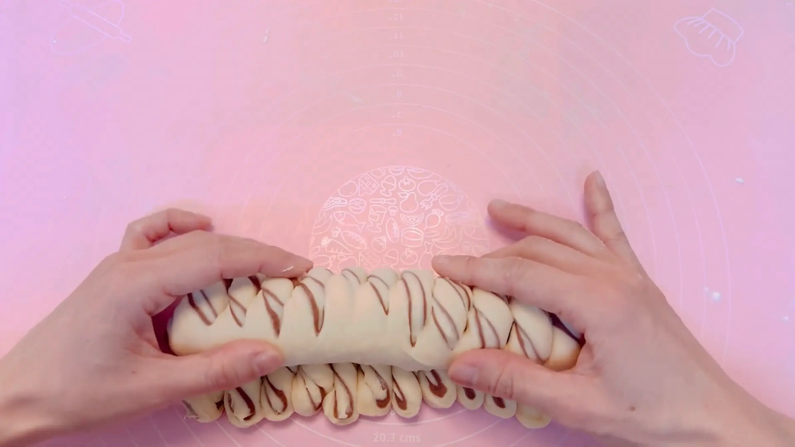
STEP 19
型に入れ、室温で1時間おく
巻いた生地を型に入れ、乾燥しないようにラップをして二次発酵させます。1時間を目安に、生地がふっくらと膨らんだら次の工程へ進みます。
巻いた生地を型に入れ、乾燥しないようにラップをして二次発酵させます。1時間を目安に、生地がふっくらと膨らんだら次の工程へ進みます。
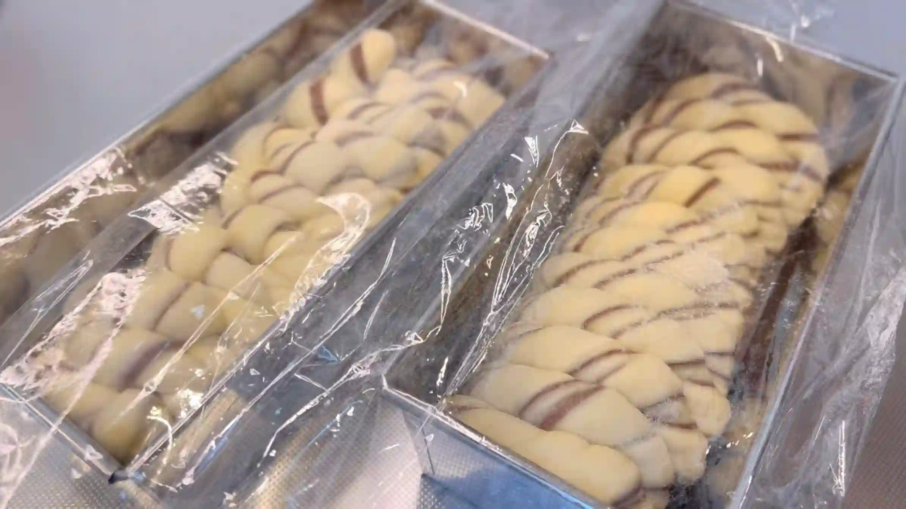
STEP 20
牛乳を塗る
焼成前に生地の表面へ牛乳を薄く塗ります。牛乳を塗ることで表面に焼き色がつきやすくなり、香ばしい焼き上がりになります。
焼成前に生地の表面へ牛乳を薄く塗ります。牛乳を塗ることで表面に焼き色がつきやすくなり、香ばしい焼き上がりになります。
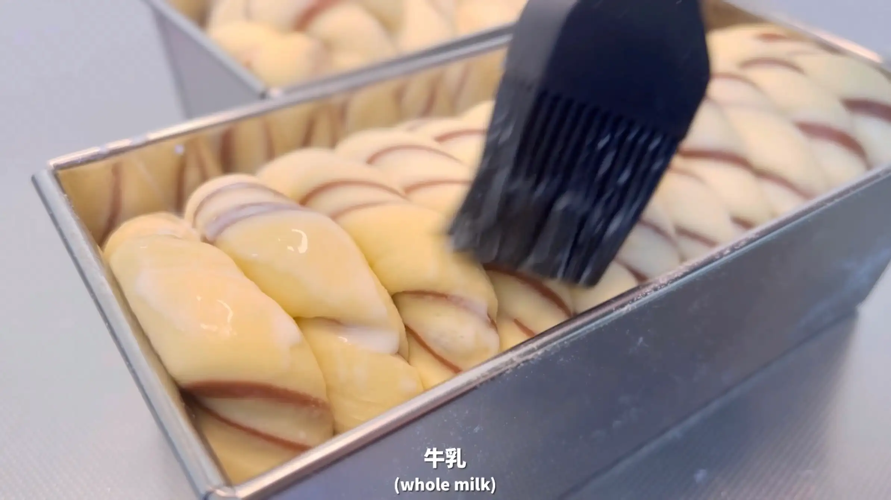
STEP 21
オーブン190℃で30分焼く
表面がきつね色になるまで焼きます。焼き時間は目安とし、焼き色を確認しながら、ご家庭のオーブンに合わせて調整してください。
表面がきつね色になるまで焼きます。焼き時間は目安とし、焼き色を確認しながら、ご家庭のオーブンに合わせて調整してください。
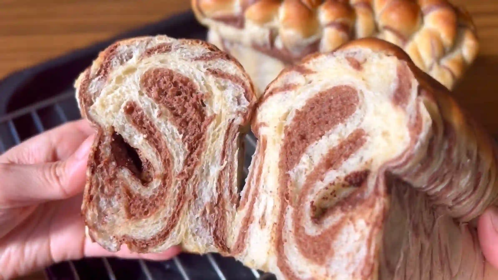
動画でチェック
おいしく作るためのワンポイントコラム
ホームベーカリー（HB）を活用して、バイカラーの見た目がとっても可愛い『マーブル食パン』を焼き上げます！マーブル模様に憧れつつも「手捏ねで2色の生地を作るのは大変そう…」と諦めていた方も多いのではないでしょうか？今回はHBをフル活用して、手間を最小限に抑えながら綺麗なマーブル模様を作る「3つのコツ」をご紹介します。
① 効率の良いHBの使い方
2色の生地を別々に作るのは大変なので、まずはホームベーカリーで捏ね作業だけ同時に進めるのがポイントです。スタートから20分ほど捏ねたら一度生地を取り出し、3対2に分割します。3の方はケースに戻してHBで発酵を続け、プレーン生地を仕上げます。一方、2の方は手捏ねでココアパウダーを混ぜ込み、常温で発酵させて生地を仕上げます。こうすることで、生地を捏ねる手間をはぶき、2色の生地を作り上げます。
② 発酵のタイムマネジメント
2つの生地を別々に作業していると「発酵の進み具合がバラバラになるのでは？」と不安になりますよね。ただ、おうちで楽しむパン作りなら多少の時間差や発酵のズレは気にせず進めていくのもありだと思います。プロの現場とは異なり、自分で食べる分には風味や焼き上がりに大きな影響は出ないため、焦らず自分のペースで丁寧に作るのがポイントです。
③ 美しい成形のコツ
プレーンとココアの生地を重ねて三つ折りにし、細長くカットしてねじっていく際は、ねじりの回数を多くしすぎず、少し緩めに巻くのがコツです。ねじりすぎると生地に負担がかかり、焼き上がりが固くなったり模様が暴れてしまいます。ねじりの際に生地の下をお箸で押さえると、作業しやすくなるのでおすすめです。
「2色の生地作り」や「マーブル成形」と聞くと難しそうに思えますが、HBを賢く使えば実はとっても手軽！「HBだと食パンしか作れない」と思われがちですが、工程の一部を任せることでパン作りの幅がぐっと広がります。ちなみに我が家で活躍しているのはNational製のとっても古いHBなのですが、最新の機種をお持ちの方ならもっと快適に作れるかもしれません。羨ましいです！カットした瞬間に現れる美しいマーブル模様とふわふわの食感を、ぜひおうちで楽しんでみてください。
① 効率の良いHBの使い方
2色の生地を別々に作るのは大変なので、まずはホームベーカリーで捏ね作業だけ同時に進めるのがポイントです。スタートから20分ほど捏ねたら一度生地を取り出し、3対2に分割します。3の方はケースに戻してHBで発酵を続け、プレーン生地を仕上げます。一方、2の方は手捏ねでココアパウダーを混ぜ込み、常温で発酵させて生地を仕上げます。こうすることで、生地を捏ねる手間をはぶき、2色の生地を作り上げます。
② 発酵のタイムマネジメント
2つの生地を別々に作業していると「発酵の進み具合がバラバラになるのでは？」と不安になりますよね。ただ、おうちで楽しむパン作りなら多少の時間差や発酵のズレは気にせず進めていくのもありだと思います。プロの現場とは異なり、自分で食べる分には風味や焼き上がりに大きな影響は出ないため、焦らず自分のペースで丁寧に作るのがポイントです。
③ 美しい成形のコツ
プレーンとココアの生地を重ねて三つ折りにし、細長くカットしてねじっていく際は、ねじりの回数を多くしすぎず、少し緩めに巻くのがコツです。ねじりすぎると生地に負担がかかり、焼き上がりが固くなったり模様が暴れてしまいます。ねじりの際に生地の下をお箸で押さえると、作業しやすくなるのでおすすめです。
「2色の生地作り」や「マーブル成形」と聞くと難しそうに思えますが、HBを賢く使えば実はとっても手軽！「HBだと食パンしか作れない」と思われがちですが、工程の一部を任せることでパン作りの幅がぐっと広がります。ちなみに我が家で活躍しているのはNational製のとっても古いHBなのですが、最新の機種をお持ちの方ならもっと快適に作れるかもしれません。羨ましいです！カットした瞬間に現れる美しいマーブル模様とふわふわの食感を、ぜひおうちで楽しんでみてください。


ホームベーカリーを活用して同時に2色の生地を作る『マーブル食パン』のレシピです！チョコシートを使わず、2色の生地を同時進行で作っていきます。コラムでは「効率の良いHBの使い方」「発酵のタイムマネジメント」「美しい成形のコツ」の3つのポイントをご紹介します。